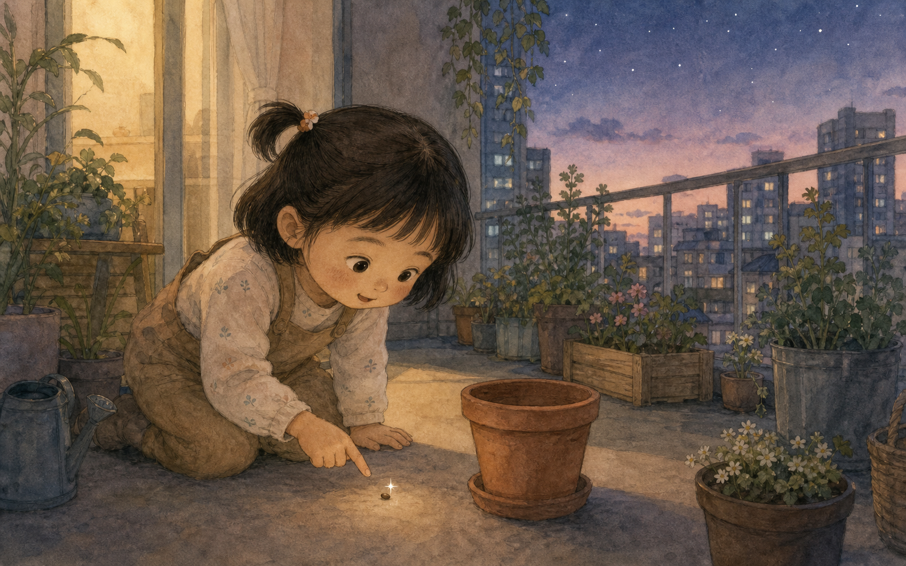
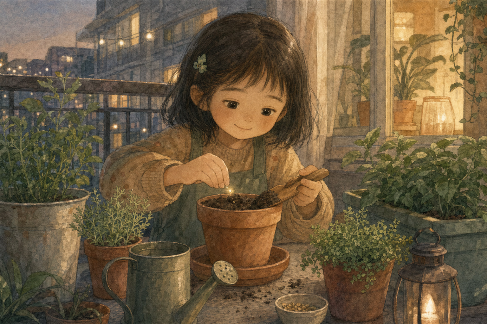
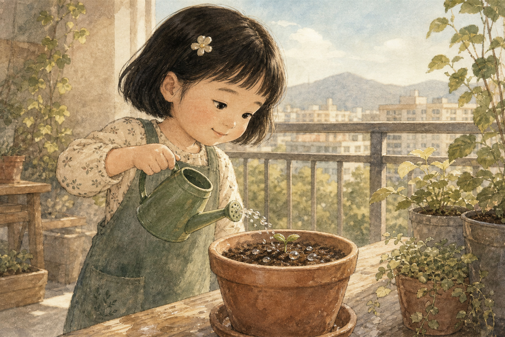
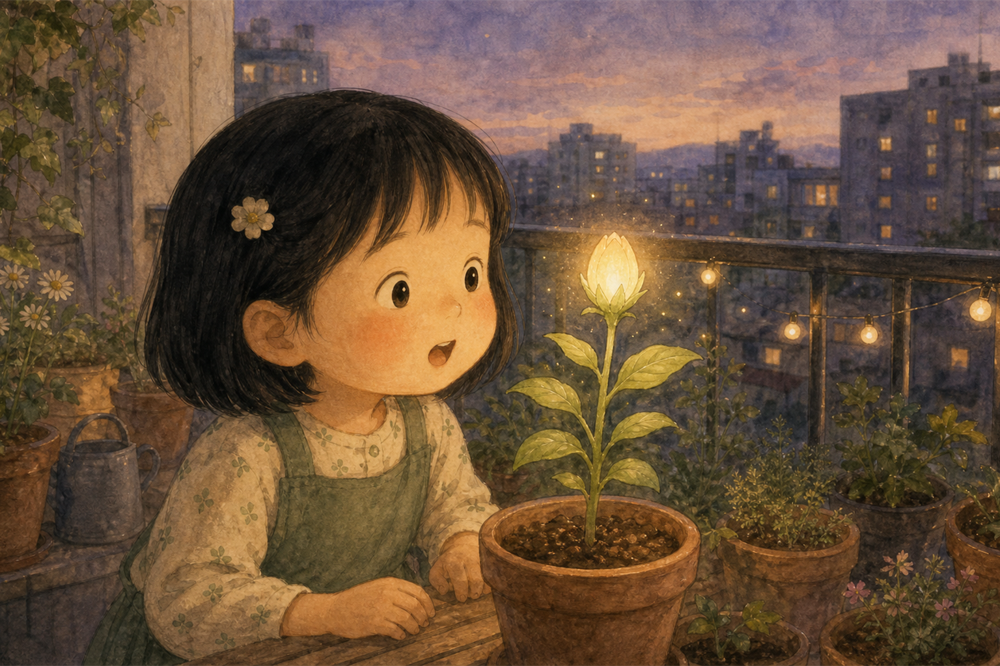
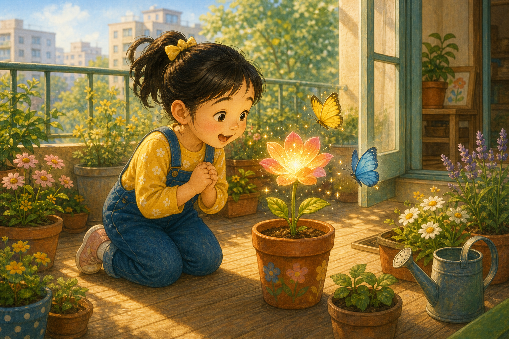
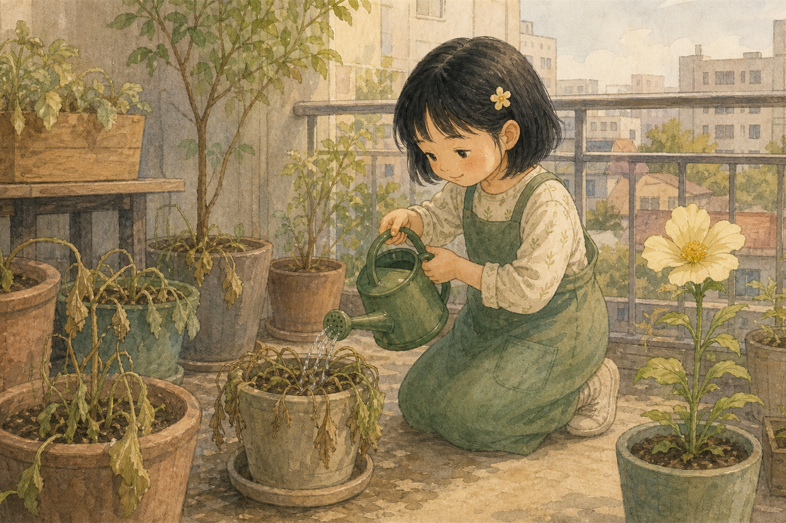
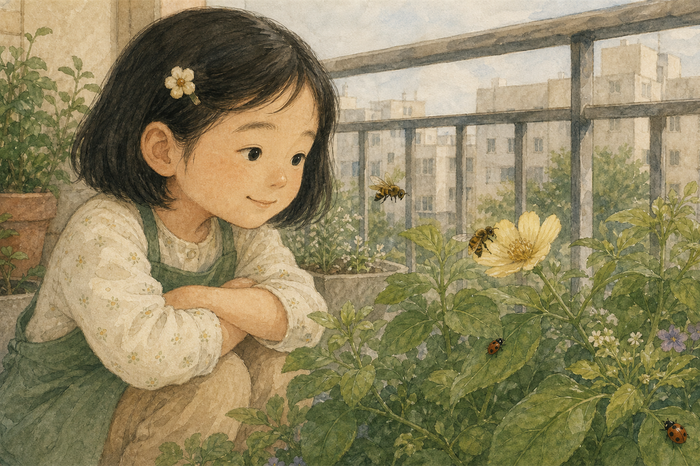
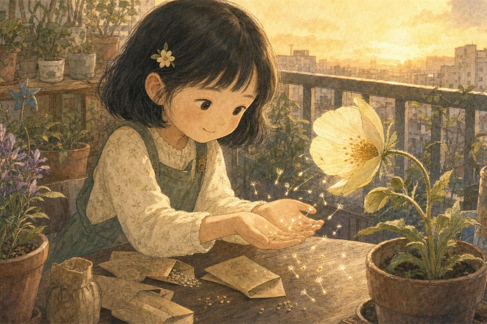
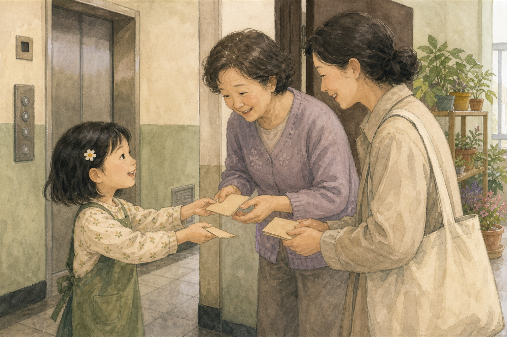
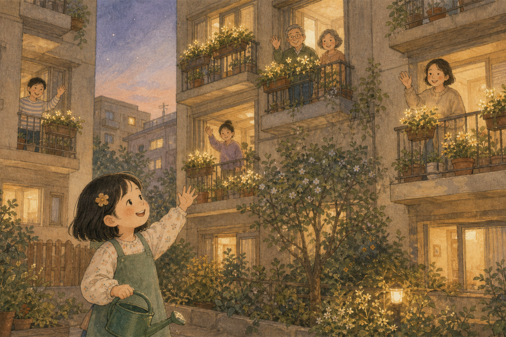

베란다에서 찾은 별빛
하린이는 아침마다 베란다 화분을 들여다보는 것을 좋아했어요. 오늘은 빈 화분 곁에서 조그만 빛 하나가 반짝였지요.
"이건 씨앗일까, 작은 별일까?" 하린이는 두 손으로 살며시 감싸 보았어요.

하린이는 아침마다 베란다 화분을 들여다보는 것을 좋아했어요. 오늘은 빈 화분 곁에서 조그만 빛 하나가 반짝였지요.
"이건 씨앗일까, 작은 별일까?" 하린이는 두 손으로 살며시 감싸 보았어요.

하린이는 작은 화분에 부드러운 흙을 담고 씨앗을 눕혔어요. 흙을 너무 세게 누르지 않고 포근하게 덮어 주었지요.
"잘 자라렴. 내가 매일 찾아올게."

다음 날 하린이는 작은 물뿌리개로 물을 주었어요. 물방울이 흙 위를 또르르 굴러가자 연한 초록 새싹이 고개를 내밀었어요.
새싹은 하린이에게 "고마워" 하고 인사하는 것 같았답니다.

며칠 동안 햇빛과 물을 먹은 새싹은 쑥쑥 자랐어요. 줄기 끝에는 작은 등불처럼 빛나는 꽃봉오리가 생겼지요.
하린이는 꽃봉오리가 놀라지 않게 조용히 웃어 주었어요.

햇살이 따뜻한 아침, 꽃봉오리가 활짝 열렸어요. 노랑 나비와 파랑 나비가 꽃잎 위를 가볍게 맴돌았지요.
하린이는 나비들이 쉴 수 있도록 베란다 문을 조금 열어 두었어요.

그날 오후, 옆 화분의 잎들이 축 늘어져 있었어요. 하린이는 반짝 꽃 말고 다른 화분도 돌봐야 한다는 것을 알았지요.
"모두 같이 건강해야 정원이 행복하지." 하린이는 화분마다 물을 나누어 주었어요.

꽃 향기를 맡고 꿀벌과 무당벌레도 찾아왔어요. 하린이는 가까이 손을 뻗지 않고, 눈으로 조용히 바라보았어요.
작은 손님들도 정원에서 할 일이 있다는 것을 배웠답니다.

저녁이 되자 반짝 꽃은 꽃잎 사이에서 작은 씨앗들을 톡톡 떨어뜨렸어요. 씨앗들은 밤하늘 별처럼 은은하게 빛났지요.
하린이는 그 씨앗들을 작은 종이 봉투에 조심히 담았어요.

하린이는 엘리베이터에서 만난 이웃들에게 씨앗 봉투를 건넸어요. "햇빛이 드는 곳에 심고, 물을 조금씩 주세요."
씨앗을 받은 사람들의 얼굴에도 작은 빛이 피어났어요.

며칠 뒤, 아파트 여러 베란다에 작은 꽃들이 피었어요. 하린이의 씨앗은 모두의 정원이 되었지요.
하린이는 오늘도 물뿌리개를 들고 말했어요. "작은 마음도 나누면 이렇게 커지는구나."